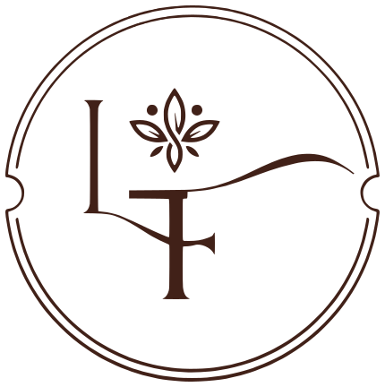
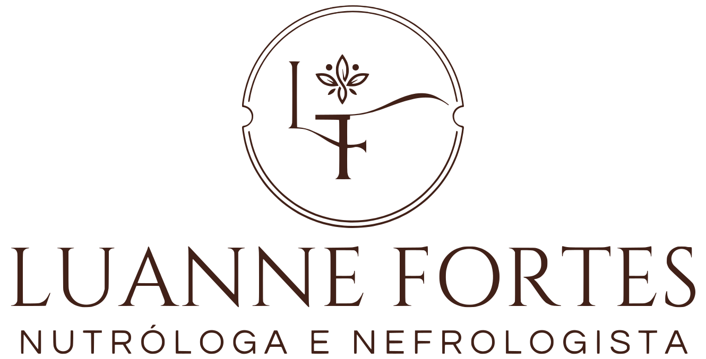

Dra. Luanne Fortes
Nutróloga enefrologistaCRM-PI 4906
Conteúdo informativo. Não substitui consulta médica nem avaliação individual.
O que maiste incomoda hoje?
Há quanto tempoisso te acompanha?
Como prefere ser atendida?
Sua mensagemestá pronta.
Enviar no WhatsAppNenhum dado seu é enviado para servidor. A mensagem só abre no seu WhatsApp.
Toque para abrir. Cada um tem um conteúdo informativo e uma mensagem pronta.
Arraste e veja o que fica fora do número.
O peso resume o corpo em um único valor. A consulta olha o conjunto.
Uma conversa rápida, e depois as dúvidas mais comuns.

Respostas informativasNefrologiae transplante
O começo da carreira, com o olhar voltado para os rins e para a saúde renal.
Umainquietação
A vontade de olhar o paciente de forma mais ampla, para além de um único órgão.
Título emNutrologia
A nutrologia entra na prática e passa a ocupar um lugar central na rotina da consulta.
Uma novaidentidade
Nasce a marca Luanne Fortes, nutróloga e nefrologista.
Rumo àlongevidade
O foco em envelhecer bem, com saúde, energia e acompanhamento individual.

Conteúdo informativo. Não substitui consulta médica
nem avaliação individual.
Dra. Luanne Fortes, CRM-PI 4906. Teresina, Piauí.